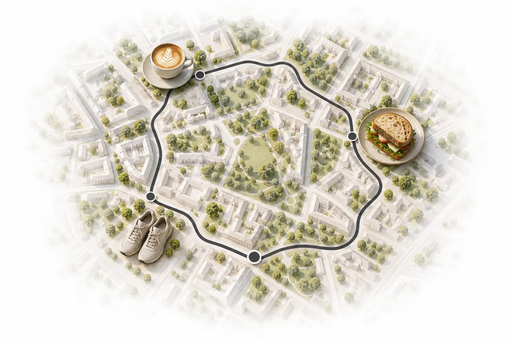
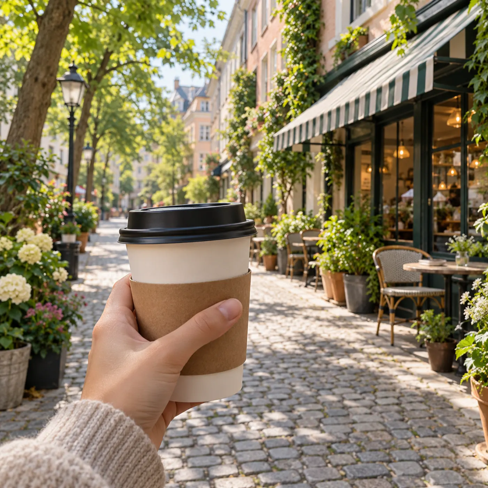
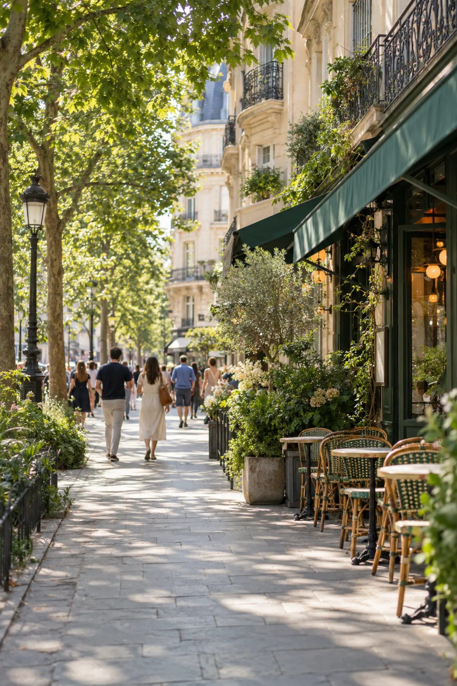

3D flyovers
Fly over every loop in 3D before you lace up.
Outloop finds walking and cycling loops that start at your door and bring you right back. Pick a mood and a time. That's it.

No planning. No maps to study. No walking back the way you came. Just a loop that ends where it began.
Tell Outloop what kind of time you want to have. It builds the loop around real cafés, parks, water and quiet streets near you.


Choose walk or ride, and how much time you have: 30 minutes, 45, an hour.
Scenic paths, coffee walks, parks and nature. Pick a few and Outloop leans into them.
Every loop starts and ends right where you are. Pick the one that feels right.
Turn-by-turn guidance, a live map and a recording you can keep. Offline, too.
Plus opens every loop near you, and a few things you'll wonder how you walked without.
Fly over every loop in 3D before you lace up.
A loop built around your time, your stops and what you'd rather avoid.
A nudge every day at the best time to head out, from the weather and the light.
See every street you've walked, and how much of your area you've explored.

Hear the story of the places you pass, as you reach them.
Take a city's best loops with you, offline.
Short of your steps? A loop that's exactly long enough.
Pick your days. A fresh loop is waiting every time.
A bonus challenge every week, and export any loop as GPX.
Prices are shown in the app in your local currency. Subscriptions renew automatically until cancelled in your Apple ID settings. Subscription terms
Where you walk says a lot about you. So Outloop keeps it on your iPhone, shows no ads and tracks nothing. Nothing leaves your phone unless you ask it to.
Your walks, saved loops and GPS tracks live on your device.
Account backup is off until you turn it on, and you can turn it off anytime.
Shared routes start and end away from your front door.
Export everything, or delete your data and account right in the app.
Same door, a better afternoon. Outloop is free to download for iPhone.